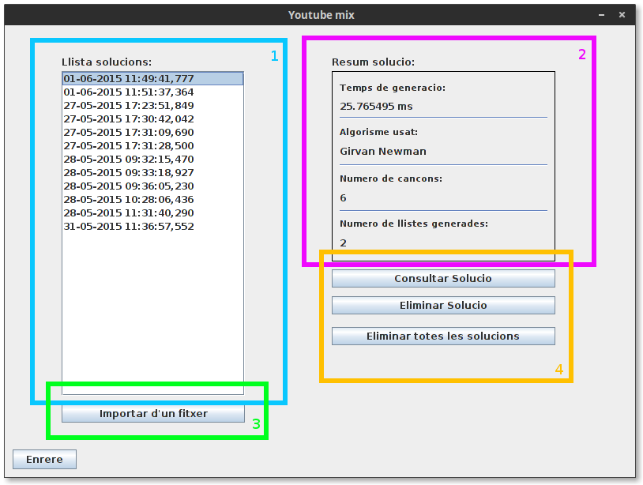

Consultar l’historial¶
Es pot accecir a l’historial presionant en “Historial” de la finestra principal. Al historial es poden consultar totes les solucions generades que s’hagin desat.
Descripció de la interficie¶
- Llistat de solucions desades: Aquesta llista conté totes solucions que s’hagin desat, Al seleccionar una, es pot veure el seu resúm a l’espai de la dreta.
- Resúm de la solució: En aquest apartat es mostra un resum de la solució seleccionada, per ajudar a identificarla. Es pot veure l’algorisme usat, el nombre de cançons i llistes generades, i el temps que ha trigat en generarse la solució.
- Importar solució d’un fitxer: Es poden importar noves solucions que estiguin desades en un fitxerm per informació sobre el format d’una solució, consultat l’apartat “Format d’un fitxer de solució”
- Eines d’edició de solucions: en aquest apartat es mostren eines per gestionar i consultar les solucions, es pot eliminar la solució seleccionada o totes les solucions disponibles. També es pot consultar en detall la solució i el graf de la solució. Per mes informació sobre com funciona el visualitzador de graf, consultar l’apartat “Consulta del Graf” de la secció “Generació de llistes”.
Format d’un fitxer de solució¶
El format de les solucions es complex, ja que ha de ser una capteta que contingui 3 documents i no està pensat per escriure manualment si no mes aviat per portar solucions generades pel programa a una altre copia del programa.
Una solució esta formada per una carpeta amb 3 document:
- entrada.txt: Aquest document desa una copia del graf d’entrada en un format que el programa pot interpretar per poguerlo consultar al consultar una solució desada.
- comunitats.txt: En aquest document es la solució en si. Conté les diferents llistes de reproducció i les cançons per les que estan formades.
- info.txt: En aquest document es desen informacions variades sobre la solució: L’algorisme usat, el temps de generació, el nombre de cançons i el nombre de llistes generades.